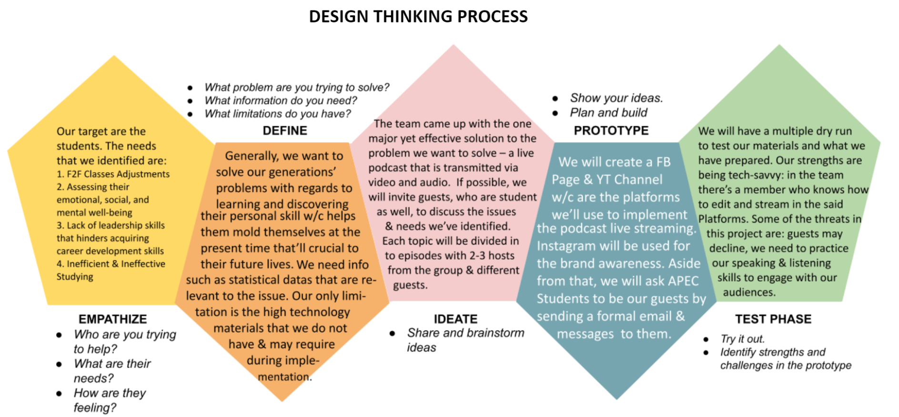

This documentary article is focused more on the process of how we discovered the needs for streaming. Inside this post, we documented every detail and step the group has done, including the outputs accomplished for the past lessons, from Experience Guides 1 to 6.
The Sixth Sense (Group 02)'s accomplished milestones and outputs per Experience Guide Lessons 1 to 6.
Experience Guide 1
In EG 1, we were introduced to the concept of Streaming including its kinds; different content types; different content platforms; and its advantages and disadvantages. Aside from that, we were able to refresh ourselves with the Design Thinking Process about the content we would create that would be helpful in the situation we are in right now. The content we have chosen was student-related content involving their inter-personal skills and approach to studying.
Experience Guide 2
- In EG 2, we were able to have an in-depth learning about different platforms used for streaming – mainly, Twitch, FaceBook, and YouTube. To know how these three platforms differ from each other, we used the methods of Basic Research to perform research on the different streaming platforms and made a comparison table to compare the three streaming platforms in terms of the web interface, mobile compatibility, accessibility, navigation, fast load times, video quality, and sound quality.
- As a group, we used the methods of basic research to learn about the different JavaScript operators – arithmetic, logical, and assignment operators. We did an in-depth exploration about the different operators' functions, how they differ from one another, and how they can be applied or used in coding.
Experience Guide 3-4
- In this EG, we focused more on assessing and comparing the comparison and logical operators. We were tasked to do a detailed HOW-TO guide on how different comparison and logical operators can be used in building a website involving JavaScript.
- Aside from that, we have started the 4th Part of Integrated PBA. As context, it aims us to to produce a streaming content based on the topic in our research paper – in our case, the topic about Unproductivity of Grade 10 Students among APEC Schools Ortigas Extension and Tayaty; we need to identify what type of streaming content is best to use for the said topic. In part 4, we analyzed our audience for the 3 selected content types we’ve chosen: live podcasts, educational videos, and live interviews.
Experience Guide 5-6
In this EG, we mainly focused on the characteristics of a good stream, empathy phase of design thinking process (Part 5 of the iPBA), and the JavaScript Switch.
- We have brainstormed what are the characteristics of a good stream; both streaming content and the streamer’s characteristics to produce a quality live stream.
- We also learned about JavaScript Switch and created a HOW-TO guide on different syntax involving it.
- Lastly, we did the 5th Part of our iPBA wherein we determined the viewer’s needs aligned with the final content type we will execute by conducting different methods of empathizing stage – interviewing a target audience and the 5 whys.
Experience Guide 7
The team documented the detailed journey and step-by-step process we’ve gone through for the first quarter. We recorded everything that we did from Lesson 1 until Lesson 6; walking through the process of discovering the need for streaming. We were able to build a website containing the said recorded documentation.